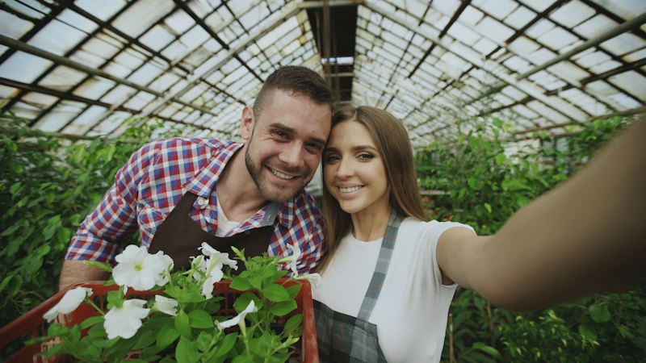

01 • Biodiversity
Preserve Heritage Seeds
Protect rare, open-pollinated, and culturally significant heirloom varieties from vanishing, keeping genetic diversity alive in community soil.
Connecting local gardeners, preserving heritage seeds, and nurturing resilient neighborhood ecosystems since 2021.
From a handful of seed envelopes exchanged over backyard fences to a vibrant decentralized network of passionate growers.

In spring 2021, three neighbors in adjoining gardens realized they each had too many heirloom tomato seed packets. Instead of letting excess seeds languish in kitchen drawers, they set up a cardboard box on the porch labeled "Take what you need, leave what you can."
Within three weeks, over forty local gardeners had contributed heritage seeds, rooted rosemary cuttings, and homegrown strawberry runners. It became obvious that gardeners don't just want to buy plants—they want to share the abundance of their soil and connect with people who share their passion.
SeedCircle was built to give that grassroots tradition a permanent home: a free, friendly, neighborhood-first platform connecting seed savers, balcony growers, community allotment holders, and beginners alike.
Empowering every neighborhood to cultivate seed sovereignty, foster biological diversity, and celebrate shared garden abundance.
Protect rare, open-pollinated, and culturally significant heirloom varieties from vanishing, keeping genetic diversity alive in community soil.

Break down financial and knowledge barriers to growing food and flowers by ensuring seeds and starter plants are shared without price tags.

Strengthen neighborhood resilience against supply chain disruptions by establishing decentralized, community-managed seed banks.
Beyond saving money on garden center trips, seed swapping transforms urban ecology and creates deep community bonds.

Seeds harvested from plants thriving in your specific regional soil and weather carry natural genetic adaptations that commercial packets lack.

Swapping cuttings and seeds eliminates millions of single-use black plastic nursery pots, synthetic fertilizers, and transport emissions.

Over 90% of historic vegetable varieties have disappeared from commercial catalogs. Peer-to-peer swaps keep rare regional treasures thriving.

Experienced master gardeners share sowing timelines, companion planting strategies, and natural pest solutions directly with beginners.
We build purposeful digital infrastructure designed to get people offline, into the soil, and meeting their neighbors.

Filter listings by exact garden zone, neighborhood radius, and exchange preference—from porch drop-offs to park meetups.

Every swap listing includes harvest year, sun requirements, soil preferences, and firsthand germination notes to guarantee growing success.

Verified local gardener profiles, secure private messaging, and swap history records ensure peace of mind for every exchange.

Comprehensive resources for organizers to host neighborhood swap circles, community garden planting days, and seed-saving classes.
The principles that guide every seed envelope, cutting trade, and conversation across our platform.
Nature produces thousands of seeds from a single flower. We believe living genetic wealth should be shared freely, never hoarded or commercialized.
We champion chemical-free growing, pollinator-friendly perennials, open-pollinated seeds, and soil-first regenerative gardening practices.
Whether you cultivate three acres or a single windowsill succulent, your contribution to local biodiversity is equally valued and celebrated.
We encourage honest seed viability labeling, pest-free cutting inspections, and thoughtful, respectful communication between members.


Get to know some of the passionate growers, seed savers, and neighborhood coordinators who make our community flourish.
"I’ve preserved 24 varieties of cold-hardy Ukrainian tomatoes passed down through four generations. Swapping ensures these varieties survive."
"I started with two small mint cuttings on my fire escape. Today, four floors in my apartment share a vertical strawberry and herb garden."

"Hosting our monthly park swap brought out over 150 neighbors who had never spoken before. Plants are the most natural icebreaker."
"Sharing native milkweed and pollinator wildflower seeds has noticeably brought back monarch butterflies and solitary bees to our city."
Join thousands of local growers sharing seeds, saving rare varieties, and building greener neighborhoods today.